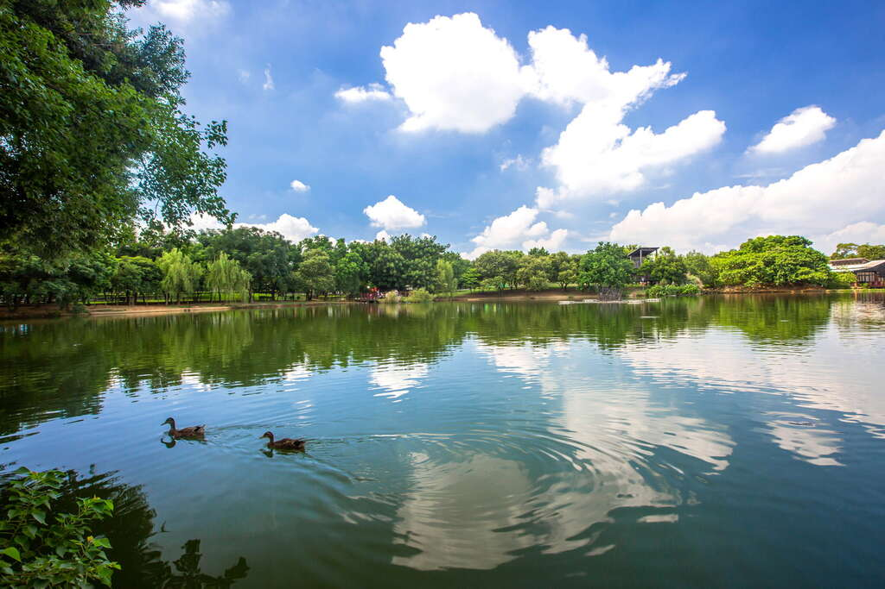

桃園市埤塘源自桃園先民為發展農田水利而開鑿出之灌溉調節設施，桃園台地上星羅密布之數千口埤塘形成亟具特色的景觀，亦使桃園市素有「千塘之鄉」之美名。除水利灌溉功能外，埤塘更具備反映社會變遷人地關係的文化歷史意涵，以及景觀、休閒遊憩、生態、教育及防災滯洪等面向之功能。 「八德埤塘自然生態公園」位於桃園市八德區興豐路旁，鄰近桃園榮民之家及國防大學等設施，基地呈三角形，佔地約5公頃。本公園基地在施工前原貌為違章建築林立之國有地，惟因基地內保有埤塘及老樹等珍貴之環境資源，故本公園於民國95年起由縣府委託株式會社象設計集團以「自然生態」為主要概念進行設計。於民國96年6月完成違章建築之拆除及清理後開始施工，並於民國97年7月完工啟用。桃園市八德地區長期以來缺少大型休憩空間，本公園完工啟用後將是八德居民假日休閒遊憩或舉辦大型活動的最佳場所，園區內「森之散步道」串聯各種自然界繽紛的水岸場景；在水岸邊座落著大大小小的「森之亭」，提供寧靜的休憩空間，享受著蟲鳴鳥叫及涓涓的流水聲；「親水護岸」使民眾能近距離地親近水面，享受涼風拂面的爽快；「高架涼亭」位於園區內的制高點，在此可享受整個園區的美景；「湖畔咖啡廳」則是最浪漫而悠閒的魅力空間。區內挖填方平衡的地形改造、既有大樹的保留、生物多樣性的考量、多孔性生物棲住空間的提供、「野鳥之島」之規劃、木構架自然通風採光的綠建築設計，諸多細節中處處呈現了對生態、永續的關懷與重視。
